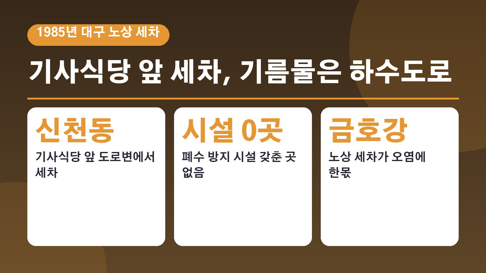
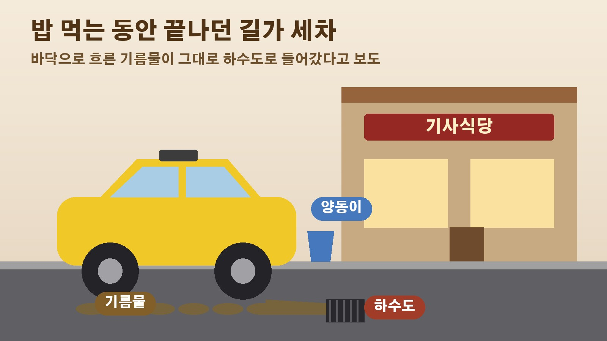

1985년 대구 기사식당 앞 노상 세차, 폐수 시설 하나 없이 하수도로 흘러간 기름물

요즘 세차장에 가면 바닥 배수로와 폐수 처리 설비가 당연하게 갖춰져 있죠. 그런데 불과 40년 전만 해도 세차는 길가에서 아무렇지 않게 이뤄지는 일이었다고 합니다. 대구MBC가 10월 3일 옛 방송을 다시 꺼내 보는 백투더투데이 코너에서 1985년 대구의 무허가 노상 세차장 고발 화면을 소개했는데요. 40년 전 세차 폐수가 어떻게 흘러갔는지 엿볼 수 있는 장면이라 차근차근 정리해 봤습니다.
40년 전 고발 방송이 다시 소개된 까닭
대구MBC는 사회 문제를 고발하던 옛 시사 코너들을 돌아보면서 1980년대 카메라 초점이라는 꼭지를 다시 꺼냈습니다. 당시에는 지금처럼 유튜브나 다른 영상 서비스가 없어서 이런 고발 화면은 공중파 텔레비전에서만 볼 수 있었고, 그만큼 파급력도 컸다고 해요. 이번에 소개된 화면의 주제는 노상 주차장에서 아무런 제재 없이 이뤄지던 세차가 금호강 오염에 한몫하고 있다는 내용이었습니다.
밥 먹는 동안 끝나던 기사식당 앞 세차
화면 속 장소는 대구 신천동의 한 기사식당입니다. 식당 안에서는 많은 운전기사들이 식사를 하고 있고, 바로 앞 도로변에서는 한창 세차가 진행되고 있었어요. 인터뷰에 나온 택시 기사는 식사하는 동안 간단히 세차를 할 수 있어서 편리하다고 말했습니다. 운전으로 하루를 보내는 기사들에게는 밥 먹는 시간에 차까지 닦을 수 있으니 반가운 방식이었던 셈이죠.
바닥을 보면 기름물이 하수도로
문제는 그 물이 어디로 가느냐였습니다. 방송은 세차하는 자리의 바닥을 자세히 비추면서 기름이 섞인 물이 그대로 하수도로 흘러 들어가는 모습을 보여 줬어요. 게다가 기사들이 많이 몰리는 식당이라면 거의 모두 이런 무허가 세차장이 붙어 있다고 해도 지나치지 않을 정도였는데, 폐수 방지 시설을 갖춘 곳은 단 한 군데도 없었다고 합니다.

기업은 입건하면서 노상 세차는 그대로
방송은 대구시의 대응에도 물음표를 던졌습니다. 대구시는 그해 7월부터 하수도 요금을 걷기 시작했고, 폐수를 흘려보내는 기업체는 환경보전법 등을 적용해 입건하고 있었어요. 그런데 길가 노상 세차장은 언제까지 그냥 둘 것이냐는 지적으로 고발 화면은 끝이 납니다. 같은 폐수인데 공장은 처벌하고 길가 세차는 내버려 두던 당시 모습이 고스란히 담겨 있는 거죠.
지금 세차장 배수로를 다시 보게 되는 장면
이 화면은 금호강 오염이 어제오늘 일이 아니라는 말로 시작합니다. 그 시절 세차 한 번에 흘러간 기름물이 강으로 이어졌다는 고발을 보고 나면, 요즘 세차장 바닥의 배수로와 폐수 설비가 왜 그렇게 갖춰져 있는지 새삼 이해가 됩니다. 영상이 궁금한 분은 대구MBC 누리집의 백투더투데이 코너에서 직접 보실 수 있어요.
참고한 기사: 대구MBC 백투더투데이 카메라출동 1985년 대구 무허가 노상 세차장 2026년 10월 3일
태그
노상세차장 무허가세차장 세차폐수 세차장 금호강 대구MBC 백투더투데이 기사식당 세차장역사 환경보전법